전자계산기조직응용기사 (2017-03-05 기출문제)
1과목: 전자계산기 프로그래밍
1. 객체지향 개념 중 객체들 간의 관계를 구축하는 방법으로, 기존 클래스로부터 속성과 동작을 물려받는 개념은?
- Method
- Class
- Inheritance
- Abstraction
(정답률: 80%)

2. C언어에서 이스케이프 시퀀스의 설명이 옳지 않은 것은?
- ＼t : tab
- ＼r : rollback
- ＼f : form feed
- ＼b : backspace
(정답률: 78%)
3. 객체지향 설계에 있어서 정보은닉의 가장 근본적인 목적은?
- 모듈 라이브러리의 재사용을 위하여
- 고려되지 않은 영향들을 최소화하기 위하여
- 코드를 개선하기 위하여
- 결합도를 높이기 위하여
(정답률: 86%)
4. 한 위치의 문자열을 다른 위치의 문자열과 비교하는 어셈블리어 명령은?
- REPE
- SCAS
- CMPS
- MOVS
(정답률: 89%)
5. 객체지향 프로그래밍 기법에 대한 설명으로 가장 옳지 않은 것은?
- 객체지향 프로그래밍 언어에는 Smalltalk, c++ 등이 있다.
- 설계 시 자료와 자료에 가해지는 프로세스를 묶어 정의하고 관계를 규명한다.
- 절차 중심 프로그래밍 기법이다.
- 새로운 개념의 모듈 단위, 즉 객체라는 단위를 중심으로 프로그램을 개발하는 기법이다.
(정답률: 82%)
6. 객체지향 개념에서 같은 종류의 집단에 속하는 속성과 행위를 정의한 것으로 객체지향 프로그램의 기본적인 사용자 정의 데이터 형은?
- 메시지
- 메소드
- 클래스
- 복잡도
(정답률: 82%)
7. 객체지향에서 어떤 클래스에 속하는 구체적인 객체를 의미하는 것은?
- method
- operation
- message
- instance
(정답률: 78%)
8. C언어에서 프로그램의 변수 선언을 "int c;"로 했을 경우에 "&c"는 어떤 의미인가?
- C의 절댓값
- C의 저장된 값
- C의 기억 장소 주소
- C의 범위
(정답률: 82%)
9. 어셈블러에서 수행된 명령어의 결과와 CPU 상태에 대한 결과를 저장하고 있는 레지스터는 무엇인가?
- 세그먼트 레지스터
- 베이스 레지스터
- 플래그 레지스터
- 인덱스 레지스터
(정답률: 58%)
10. C언어에서 사용되는 함수들의 기능에 대한 설명으로 옳지 않은 것은?
- strcpy : 문자열의 복사
- strcat : 문자열의 연결
- strlen : 문자열 내의 문자 위치 확인
- strcmp: 문자열의 비교
(정답률: 85%)
11. 다음 C언어로 작성된 프로그램을 실행하였을 때 출력 결과로 옳은 것은?
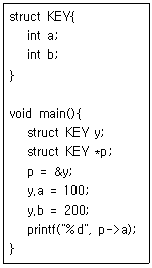
- 100
- 200
- 10000
- 20000
(정답률: 79%)
12. 어셈블리어에 대한 설명으로 옳지 않은 것은?
- 기억장치의 제어가 가능하다.
- 최적의 실행시간을 고려한 프로그램 작성이 가능하다.
- 오류 검증이 용이하며 호환성이 우수하다.
- 기호를 정하여 명령어와 데이터를 기술한다.
(정답률: 75%)
13. 하나의 오퍼랜드에 호출할 가로채기 벡터의 번호를 표현하여 가로채기를 요청하는 어셈블리어 명령은?
- TITLE
- INC
- INT
- REP
(정답률: 77%)
14. C언어에서 문자형 자료 선언 시 사용하는 것은?
- int
- double
- float
- char
(정답률: 87%)
15. 니모닉 코드에 대한 설명으로 옳지 않은 것은?
- 니모닉 코드는 기계어 작성자가 프로그램을 만들기 쉽고 이해하기 편하도록 기호 또는 문자로 압축해 놓은 코드이다.
- 니모닉 코드는 어셈블리어로 작성된 프로그램을 어셈블러(Assembler)를 이용하여 변환된 코드를 말한다.
- 니모닉 코드는 CPU 제조사에서 제공하며 사람이 이해하지 못하는 기계어의 단점을 해결하기 위해 나타내는 방법이다.
- 니모닉 코드는 어셈블리어(Assembly Language)라고도 한다.
(정답률: 53%)
16. 같은 상위 객체에서 상속받은 여러 개의 하위 객체들이 다른 형태의 특성을 갖는 객체로 이용될 수 있는 성질은?
- 캡슐화
- 추상화
- 바인딩
- 다형성
(정답률: 83%)
17. C언어의 기억 클래스(Storage Class) 종류에 해당하지 않는 것은?
- auto
- internal
- static
- register
(정답률: 72%)
18. C언어에서 서로 다른 표준 자료형들을 구성원소로 하여 새로운 자료형을 정의하는 방법은?
- 열거형 선언
- 구조형 선언
- 배열형 선언
- 포인터형 선언
(정답률: 65%)
19. 다음 프로그램에서 출력되는 결과는?
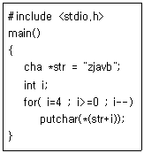
- avbzj
- zjavb
- vbzja
- bvajz
(정답률: 83%)
20. C언어에서 문자열 입력 함수는?
- getchar( )
- puts( )
- gets( )
- putchar ( )
(정답률: 79%)
2과목: 자료구조 및 데이터통신
21. 아날로그 데이터를 디지털 신호로 변환하는 과정에 해당하지 않는 것은?
- 표본화
- 복호화
- 부호화
- 양자화
(정답률: 80%)
22. 회선 교환 방식에 대한 설명으로 틀린 것은?
- 호 설정이 이루어지고 나면 정보를 연속적으로 전송할 수 있는 전용 통신로와 같은 기능을 갖는다.
- 호 설정이 이루어진 다음은 교환기 내에서 처리를 위한 지연이 거의 없다.
- 고정된 대역폭으로 데이터를 전송한다.
- 에러 없는 정보전달이 요구되는 데이터 서비스에 매우 적합하다.
(정답률: 56%)
23. 주파수 분할 다중화기(FDM)에서 인접한 채널 간의 상호 간섭을 막기 위해 필요한 것은?
- 버퍼
- 슬롯
- 채널
- 가드 밴드
(정답률: 86%)
24. 라우팅 프로토콜에서 EIGRP가 사용할 수 있는 Metric 요소가 아닌 것은?
- Bandwidth
- Delay
- Reliability
- Hop
(정답률: 64%)
25. PSK에서 반송파 간의 위상차는? (단, M은 진수이다.)
- π/M
- 2π/M
- π/2M
- 2πM
(정답률: 75%)
26. 100MHz의 반송파를 주파수 4kHz의 변조 신호로 최대 주파수편이 75kHz를 갖게 FM변조했을 때 소요 주파수 대역(kHz)은?
- 150
- 154
- 158
- 162
(정답률: 53%)
27. IETF에서 고안한 IPv4에서 IPv6로 전환(천이)하는 데 사용되는 전략이 아닌 것은?
- Dual stack
- Tunneling
- Header translation
- Source routing
(정답률: 64%)
28. 192.168.1.0/24 네트워크를 FLSM 방식을 이용하여 9개의 subnet으로 나누고 ip subnet-zero를 적용했다. 이때 subnetting된 네트워크 중 7번째 네트워크의 2번째 사용 가능한 IP 주소는?
- 192.168.255.255
- 192.168.9.96
- 192.168.255.97
- 192.168.1.98
(정답률: 60%)
29. OSI 7계층에서 연결지향형 서비스를 제공하고 신뢰성 있는 데이터 전송을 보장하는 전송계층 프로토콜은?
- IP
- TCP
- UDP
- FTP
(정답률: 75%)
30. HDLC의 프레임 형식 중 프레임 수신 확인, 프레임의 전송 요구, 그리고 프레임 전송의 일시 연기 요구와 같은 제어 기능을 수행하는 프레임은?
- 정보(Information) 프레임
- 감시형식(Supervisory) 프레임
- 비번호(Unnumbered) 프레임
- Flag 프레임
(정답률: 59%)
31. 스키마의 3계층 중 다음 설명에 해당하는 것은?
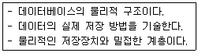
- 외부 스키마
- 개념 스키마
- 내부 스키마
- 관계 스키마
(정답률: 80%)
32. 다음 그래프의 인접 행렬(Adjacency Matrix)로 옳은 것은?
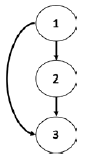
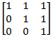
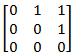
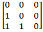
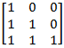
(정답률: 75%)
33. SQL에서 VIEW를 삭제할 때 사용하는 명령은?
- ERASE
- DELETE
- DROP
- KILL
(정답률: 82%)
34. Internal sort에 해당하지 않는 것은?
- Bubble sort
- balanced merge sort
- quick sort
- radix sort
(정답률: 67%)
35. 최적, 최악의 경우에도 수행시간이 O(nlog2n) 가 되는 정렬 알고리즘은?
- 힙 소트
- 퀵 소트
- 버블 소트
- 삽입 소트
(정답률: 62%)
36. 선형 자료 구조가 아닌 것은?
- 큐
- 스택
- 데크
- 트리
(정답률: 87%)
37. 이진트리의 레벨 k에서 가질 수 있는 최대 노드 수는?
- 2k
- 2k-1
- 2k+1
- 2k+1
(정답률: 79%)
38. 아래 자료에 대하여 2원 합병 정렬을 적용 할 경우 1단계 수행한 후 결과는?
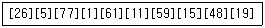
- [1 5 11 15 19 26 48 59 61 77]
- [1 5 11 15 26 59 61 77][19 48]
- [1 5 26 77][11 15 59 61][19 48]
- [5 26][1 77][11 61][15 59][19 48]
(정답률: 80%)
39. 해싱 함수의 값을 구한 결과 두 개의 키 값이 동일한 값을 가지는 경우를 무엇이라고 하는가?
- Clustering
- Overflow
- Relation
- Collision
(정답률: 88%)
40. 트랜잭션의 기준 항목으로 볼 수 없는 것은?
- 원자성
- 일관성
- 독립성
- 중복성
(정답률: 87%)
3과목: 전자계산기구조
41. 고선명(HD) 비디오 데이터를 저장하기 위해 짧은 파장(4⑤나노미터)을 갖는 레이저를 사용하는 광 기록방식 저장매체는?
- Blu-ray 디스크
- CD
- DVD
- 플래시 메모리
(정답률: 81%)
42. Cache memory에 대한 설명과 가장 관계가 깊은 것은?
- 내용에 의해서 access되는 memory unit이다.
- 대형 computer system에서만 사용되는 개념이다.
- 중앙처리장치가 자주 접근하거나 최근에 접근한 메모리 블록을 저장하는 초고속 기억장치이다.
- memory에 접근을 각 module별로 액세스하도록 하는 기억장치이다.
(정답률: 77%)
43. RAM에 관한 설명으로 가장 타당하지 않은 것은?
- DRAM은 커패시터에 전하를 저장하는 방식으로 데이터를 저장한다.
- SRAM은 플립플롭을 사용해 데이터를 저장하기 때문에 방전 현상이 나타난다.
- DRAM은 상대적으로 소비전력이 적으며 대용량 메모리 제조에 적합하다.
- SRAM은 캐시메모리로 주로 사용된다.
(정답률: 75%)
44. 부호를 나타내지 않은 양의 수에 대한 산술적 시프트를 한 경우에 대한 설명으로 가장 옳지 않은 것은?
- 왼쪽으로 시프트 시 밀려나는 비트가 1이면 절단 현상이 발생한다.
- 시프트 시 새로 들어오는 비트는 0이다.
- 오른쪽으로 1번 시프트하면 2로 나눈것과 같다.
- 왼쪽으로 1번 시프트하면 2배한 것과 같다.
(정답률: 62%)
45. 다음 논리회로에 관한 설명 중 가장 옳지 않는 것은?
- 조합 논리회로는 입력과 출력을 가진 논리게이트의 집합으로 기억 기능이 없다.
- 순차 논리회로는 입력과 논리회로의 현재 상태에 의해 출력이 결정되는 회로이다.
- 멀티플랙서는 여러 개의 입력선 중 하나의 입력선만 출력에 전달하는 조합논리회로이다.
- 전가산기는 세 개의 입력들과 두 개의 출력들을 가진 순서논리회로이다.
(정답률: 58%)
46. 인스트럭션 수행을 위한 메이저 상태를 설명한 것으로 가장 옳은 것은?
- execute 상태는 간접주소지정방식의 경우에만 수행된다.
- 명령어를 기억 장치 내에서 가져오기 위한 동작을 fetch라 한다.
- CPU의 현재 상태를 보관하기 위한 기억장치접근을 indirect 상태라 한다.
- 명령어 종류를 판별하는 것을 indirect 상태라 한다.
(정답률: 72%)
47. 정수 n bit를 사용하여 1의 보수(1's complement)로 표현하였을 때 그 값의 범위는?
- −(2n−1−1) ~ 2n−1−1
- −2n−1 ~ 2n−1−1
- −2n ~ 2n−1
- −2n−1 ~ 2n−1−1
(정답률: 60%)
48. 캐시의 쓰기 정책 중 write-through 방식의 단점은?
- 쓰기 동작에 걸리는 시간이 길다.
- 읽기 동작에 걸리는 시간이 길다.
- 하드웨어가 복잡하다.
- 주기억장치의 내용이 무효상태인 경우가 있다.
(정답률: 64%)
49. 프로그램 상태 워드(program status word)에 대한 설명으로 가장 타당한 것은?
- 시스템의 동작은 CPU 안에 있는 program counter에 의해 제어된다.
- interrupt 레지스터는 PSW의 일종이다.
- CPU의 상태를 나타내는 정보를 가지고, 독립된 레지스터로 구성된다.
- PSW는 8bit의 크기이다.
(정답률: 62%)
50. 명령어 인출(IF), 명령어 해독(ID), 오퍼랜드 인출(OF), 실행(EX)의 순서로 실행되고, 각 단계에 걸리는 시간이 같은 4단계 명령어 파이프라인에 인가되는 클록 주파수가 1GHZ일 때, 20개의 명령어를 실행하는 데 걸리는 시간은?
- 20ns
- 21ns
- 22ns
- 23ns
(정답률: 49%)
51. 인터럽트 발생 원인으로 가장 옳지 않은 것은?
- 일방적인 인스트럭션 수행
- 수퍼바이저 콜
- 정전이나 자료 전달의 오류 발생
- 전압의 변화나 온도 변화
(정답률: 74%)
52. 다음의 그림은 병렬 가산기(parallel adder)의 입력과 출력을 나타낸 것이다. 음수 표현을 위해 2의 보수(2's complement)를 사용한다고 할 경우 그림은 어떤 연산 수행을 위한 것인가?
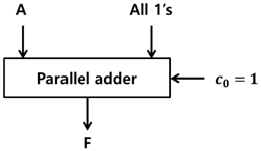
- F= A
- F= A+1
- F= A−1
- F= A'+1
(정답률: 53%)
53. 병렬처리와 가장 관계없는 것은?
- Array Processor
- Multiple phase clock
- Vector Processor
- Pipeline Processing
(정답률: 48%)
54. CAM(Content Addressable Memory)의 특징으로 가장 옳은 것은?
- 주 메모리에 비해 상대적으로 값이 싸다.
- 구조 및 동작이 간단하다.
- 명령어를 순서대로 기억시킨다.
- 저장된 내용의 일부를 이용하여 정보의 위치를 검색한다.
(정답률: 73%)
55. 컴퓨터에서 사용하는 마이크로명령어를 기능별로 분류할 때 동일한 분류에 포함되지 않는 것은?
- JMP(Jump 명령)
- ADD(Addition 명령)
- ROL(Rotate Left 명령)
- CLC(Clear Carry 명령)
(정답률: 59%)
56. 인터럽트의 요청이 있을 경우에 처리하는 내용 중 가장 관계없는 것은?
- 중앙처리장치는 인터럽트를 요구한 장치를 확인하기 위하여 입출력장치를 폴링한다.
- PSW(Program Status Word)에 현재의 상태를 보관한다.
- 인터럽트 서비스 프로그램을 실행하는 중간에는 다른 인터럽트를 처리할 수 없다.
- 인터럽트를 요구한 장치를 위한 인터럽트 서비스 프로그램을 실행한다.
(정답률: 66%)
57. 다음의 마이크로 오퍼레이션과 가장 관련 있는 것은? (단, EAC: 끝자리 올림과 누산기를 의미)
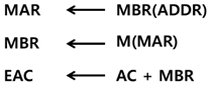
- AND
- ADD
- JMP
- BSA
(정답률: 75%)
58. 우선순위 중재 방식 중 중재동작이 끝날 때마다 모든 마스터들의 우선순위가 한 단계씩 낮아지고, 가장 우선순위가 낮았던 마스터가 최상위 우선순위를 가지는 방식은?
- 회전우선순위
- 임의우선순위
- 동등우선순위
- 최소-최근 사용 우선순위
(정답률: 75%)
59. 제어장치의 기능에 대한 설명으로 가장 옳지 않은 것은?
- 입력장치의 내용을 기억장치에 기록한다.
- 기억장치의 내용을 연산장치에 옮긴다.
- 가상메모리에 있는 프로그램을 해독한다.
- 기억장치의 내용을 출력장치에 옮긴다.
(정답률: 69%)
60. 하드웨어 신호에 의하여 특정번지의 서브루틴을 수행하는 것은?
- vectored interrupt
- handshaking mode
- subroutine call
- DMA 방식
(정답률: 52%)
4과목: 운영체제
61. 다음 중 시스템 소프트웨어가 아닌 것은?
- Compiler
- Flash
- Linker
- Loader
(정답률: 68%)
62. 다음과 같은 형태로 임계 구역의 접근을 제어하는 상호배제 기법은?
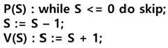
- Dekker Algorithm
- Lamport Algorithm
- Peterson Algorithm
- Semaphore
(정답률: 69%)
63. UNIX 시스템에서 사용자와 운영체제 서비스를 연결해 주는 인터페이스로 상위수준의 소프트웨어가 커널의 기능을 이용할 수 있도록 지원해주는 것은?
- 시스템 호출
- 하드웨어 제어 루틴
- 프로세스 제어 서브 시스템
- 파일 서브 시스템
(정답률: 54%)
64. 다음 표와 같이 작업이 제출되었을 때, 라운드로빈 정책을 사용하여 스케줄링할 경우 평균 반환시간을 계산한 결과로 옳은 것은? (단, 작업할당 시간은 4시간으로 한다.)
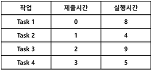
- 6.5
- 9.25
- 11.75
- 18.25
(정답률: 42%)
65. 디스크 스케줄링에서 SCAN기법을 사용할 경우, 다음과 같은 작업 대기 큐의 작업들을 수행하기 위한 헤드의 총 트랙 이동 거리는? (단, 초기 헤드의 위치는 30이고, 현재 0번 트랙으로 이동 중이다.)
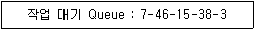
- 39
- 59
- 70
- 151
(정답률: 68%)
66. 다음 중 분산처리 시스템을 프로세스 모델에 따라서 분류하였을 경우에 해당되지 않는 것은?
- 클라이언트-서버 모델
- 다중 접근 버스 모델
- 프로세서 풀 모델
- 혼합 모델
(정답률: 29%)
67. 정상적인 데이터에 여분에 거짓 데이터를 삽입하여 불법적으로 데이터를 분석하는 공격을 방어할 수 있는 기법은?
- Digital Signature Mechanism
- Traffic Padding Mechanism
- Authentication Exchange Mechanism
- Access Control Mechanism
(정답률: 62%)
68. 다중 처리기 운영체제 구성에서 주/종(Master/Slave) 처리기 시스템에 대한 설명으로 가장 옳지 않은 것은?
- 주 프로세서는 입/출력과 연산을 담당한다.
- 종 프로세서는 입/출력 위주의 작업을 처리한다.
- 주 프로세서만이 운영체제를 수행한다.
- 주 프로세서에 문제가 발생하면 전체 시스템이 멈춘다.
(정답률: 60%)
69. 워킹 셋(working set)에 대한 설명으로 옳지 않은 것은?
- 주기억장치에 적재되지 않으면 스레싱이 발생할 수 있다.
- 실행 중인 프로세스가 일정 시간 동안 참조하는 페이지의 집합이다.
- 주기억장치에 적재되어야 효율적인 실행이 가능하다.
- 프로세스 실행 중에는 크기가 변하지 않는다.
(정답률: 68%)
70. 사용자가 요청한 디스크 입 출력 내용이 다음과 같은 순서로 큐에 들어 있다. 이때 SSTF 스케줄링을 사용한 경우의 처리 순서는? (단, 현재 헤드 위치는 53이고, 제일 안쪽이 1번, 바깥쪽이 200번 트랙이다.)
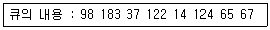
- 53-65-67-37-14-98-122-124-183
- 53-98-183-37-122-14-124-65-67
- 53-37-14-65-67-98-122-124-183
- 53-67-65-124-14-122-37-183-98
(정답률: 70%)
71. 기계어와 비교하여 어셈블리 언어가 갖는 장점이 아닌 것은?
- 기계어로의 번역과정이 불필요하다.
- 프로그램을 읽고 이해하기 쉽다.
- 프로그램의 주소가 기호 번지이다.
- 프로그램에 데이터를 사용하기 쉽다.
(정답률: 67%)
72. 준비상태에 있는 프로세스 중에서 실행될 프로세스를 선정하여 CPU에 할당하는 것은?
- Job Scheduler
- Process Scheduler
- Spooler
- Traffic Controller
(정답률: 56%)
73. 하나의 루트 디렉토리와 여러 개의 서브 디렉토리로 구성되어 있으며 각 디렉토리의 생성 및 삭제가 용이하며 MS_DOS, Unix, MS-Windows 운영체제에서 사용하고 있는 디렉토리 구조는?
- 1단계 디렉토리
- 2단계 디렉토리
- 비순환 그래프 디렉토리
- 트리 구조 디렉토리
(정답률: 70%)
74. Virtual Memory의 page Replacement 알고리즘이 아닌 것은?
- FIFO
- LRU
- SSTF
- LFU
(정답률: 65%)
75. 4개의 페이지를 수용할 수 있는 주기억장치가 있으며, 초기에는 모두 비어 있다고 가정한다. 다음의 순서로 페이지 참조가 발생할 때, FIFO 페이지 교체 알고리즘을 사용할 경우 페이지 결함의 발생 횟수는?
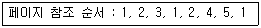
- 6회
- 7회
- 8회
- 9회
(정답률: 69%)
76. 다음 설명에 해당하는 운영체제 성능평가 기준은?
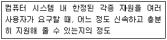
- Availability
- Reliability
- Throughput
- Turn-around Time
(정답률: 69%)
77. 공유 메모리를 사용하는 병렬 프로세스들의 상호배제를 위한 요구조건이 아닌 것은?
- 자원들은 이용 가능한 자원 풀(pool)로 부터 프로세서에 의해 요구되고 할당된다.
- 두 개 이상의 프로세스들이 동시에 임계영역에 있어서는 안 된다.
- 어떤 프로세스도 임계구역으로 들어가는 것이 무한정 연기되어서는 안 된다.
- 임계구역 바깥에 있는 프로세스가 다른 프로세스의 임계구역 진입을 막아서는 안 된다.
(정답률: 40%)
78. 다음 중 암호화 기법이 아닌 것은?
- DES
- MALLOC
- Public Key System
- RSA
(정답률: 68%)
79. UNIX의 시스템 콜(call) 중에서 새로운 프로세스를 생성시키는 데 사용하는 것은?
- exec
- fork
- creat
- dup
(정답률: 65%)
80. UNIX에서 실행명령의 백그라운드(Background) 처리를 위해 명령어의 끝에 입력하는 기호는?
- @
- #
- &
- %
(정답률: 52%)
5과목: 마이크로 전자계산기
81. 다음 중 가장 많은 양의 자료를 일정 시간에 입출력할 수 있는 방식은?
- 프로그램에 의한 입ㆍ출력
- 인터럽트에 의한 입ㆍ출력
- DMA
- 직렬 입ㆍ출력
(정답률: 71%)
82. TTL 출력 종류 중 논리값이 0도 아니고 1도 아닌, 고임피던스 상태를 가지며, 특히 bus 구조에 적합한 것은?
- Tri-state 출력
- Open collector 출력
- Totem-pole 출력
- TTL 표준출력
(정답률: 61%)
83. 입력과 출력의 독립 제어점을 갖는 8비트로 구성된 5개의 레지스터에 상호 병렬 데이터 전송이 가능하기 위한 데이터 선의 수는?
- 8
- 40
- 80
- 160
(정답률: 30%)
84. 절대주소와 상대주소에 대한 설명으로 옳지 않은 것은?
- 절대주소는 고유주소라고도 부르며 기억장치에 고유하게 부여된 주소를 말한다.
- 절대주소를 이용하여 기억장치에 직접 접근할 수 있다.
- 상대주소는 기준주소를 필요로 하는 주소로 고유주소로 변경되어야 기억장치 접근이 가능하다.
- 상대주소는 기억장치 접근이 쉽지만 기억장치의 이용효율이 떨어지는 단점을 가지고 있다.
(정답률: 62%)
85. 인터럽트 반응시간(interrupt response time)에 대한 설명으로 가장 옳은 것은?
- 인터럽트 요청신호가 발생한 후부터 해당 인터럽트 취급루틴의 수행이 시작될 때까지
- 인터럽트 요청신호가 발생한 후부터 해당 인터럽트 취급루틴의 수행이 완료될 때까지
- 인터럽트 요청신호가 발생한 후 또는 다른 인터럽트 요청신호가 발생할 때까지
- 인터럽트 취급루틴의 수행을 시작할 때부터 완료할 때까지
(정답률: 65%)
86. 다음 중 제어 프로그램에 속하는 것은?
- 수퍼바이저 프로그램
- 언어 처리 프로그램
- 유틸리티 프로그램
- 응용 프로그램
(정답률: 77%)
87. 주기억장치에 기억된 프로그램의 명령을 해독하여 그 명령 신호를 각 장치에 보내 명령을 처리하도록 지시하는 것은?
- 제어 장치
- 연산 장치
- 기억 장치
- 입력 장치
(정답률: 80%)
88. 입력된 아날로그 신호의 레벨을 미리 지정된 기준레벨과 비교하고, 양자화된 레벨을 식별하여 그 값을 디지털 신호로 출력하는 장치는?
- Decoder
- Encoder
- D/A Converter
- A/D Converter
(정답률: 78%)
89. 주루틴(main routine)의 호출명령에 의하여 명령 실행 제어만이 넘겨져서 고유의 루틴처리를 행하도록 하는 것은?
- 열린 서브루틴(open subroutine)
- 폐쇄 서브루틴(closed subroutine)
- 매크로(macro)
- 벡터(vector)
(정답률: 63%)
90. DMA 제어장치가 꼭 갖추어야 할 필수 레지스터가 아닌 것은?
- status register
- program counter
- data counter
- address register
(정답률: 49%)
91. 병렬 입출력 인터페이스(interface)의 특징으로 옳은 것은?
- 고속의 데이터 전송을 할 수 있다.
- 원거리 통신에 사용한다.
- 전송을 위한 회선이 적게 사용된다.
- 입력된 직렬 데이터를 병렬 데이터로 변환시켜 주는 기능을 갖고 있다.
(정답률: 59%)
92. 마이크로프로세서(micro processor) 어셈블리 프로그램의 ORG 명령이 사용될 수 없는 것은?
- 프로그램 카운터(program counter)
- 서브루틴(subroutine)
- 램 스토리지(RAM storage)
- 메모리 스택(memory stack)
(정답률: 40%)
93. 다음 중 UART가 수행할 수 있는 동작이 아닌 것은?
- 키보드나 마우스로부터 들어오는 인터럽트를 처리한다.
- 외부 전송을 위해 패리티 비트를 추가한다.
- 데이터를 외부로 내보낼 때에는 시작비트와 정지비트를 추가한다.
- 바이트들을 외부에 전달하기 위해 하나의 병렬 비트 스트림으로 변환한다.
(정답률: 56%)
94. 주소지정방식 중에서 기억장치를 가장 많이 액세스해야 하는 방식은?
- 직접 주소지정방식
- 간접 주소지정방식
- 상대 주소지정방식
- 인덱스 주소지정방식
(정답률: 57%)
95. 주어진 논리 기능을 수행하도록 프로그램 가능한 논리 게이트들을 가진 SPLD를 근간으로 하고 있으며, 전기적 소거 및 프로그램 기능 읽기 전용 기억장치(EEPROM)등에 사용하는 것은?
- PAL
- CPLD
- FPGA
- ROM
(정답률: 63%)
96. 마이크로컴퓨터에서 자주 이용되는 표준화된 버스 중 성격이 다른 것은?
- S-100 bus
- Multi-bus
- RS-232C
- IEEE-488
(정답률: 69%)
97. 기억 장치 중 데이터의 내용으로 병렬 탐색에 가장 적합한 것은?
- RAM(Random Access Memory)
- ROM(Read Only Memory)
- CAM(Content Addressable Memory)
- SAM(Serial Access Memory)
(정답률: 63%)
98. 고정배선제어에 비해 마이크로프로그램을 이용한 제어 방식이 가지는 장점이 아닌 것은?
- 변경 가능한 제어기억소자를 사용하면 제어의 변경이 가능하다.
- 동작 속도를 극대화할 수 있다.
- 제어 논리의 설계를 프로그램 작업으로 수행할 수 있다.
- 개발기간을 단축시킬 수 있고 에러에 대한 진단 및 수정이 쉽다.
(정답률: 50%)
99. 기억장치 대역폭(bandwidth)에 대한 설명 중 틀린 것은?
- 기억 장치가 마이크로프로세서에 1초 동안에 전송할 수 있는 비트 수이다.
- 사이클 타임 또는 접근시간과 기억장치에 연결되어 있는 데이터 버스 길이(버스 폭)에 따라 결정된다.
- 한 번에 전송되는 데이터 워드가 크면 대역폭을 증가한다.
- 기억장치 모듈 접근시간이 크면 대역폭은 증가한다.
(정답률: 67%)
100. 제어 메모리에서 번지를 결정하는 방법과 관련이 없는 것은?
- 제어 어드레스 레지스터를 하나씩 증가
- 마이크로 명령어에서 지정하는 번지로 무조건 분기
- 상태비트에 따라 무조건 분기
- 매크로 동작 비트로부터 ROM으로의 매핑
(정답률: 49%)